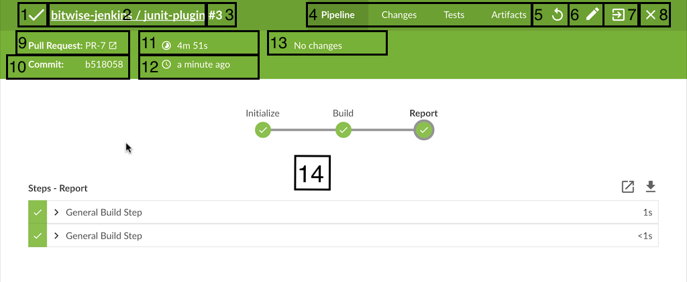

流水线运行细节视图
Blue Ocean 流水线运行细节视图显示了与单个流水线运行相关的信息并允许以后编辑或回放运行。 下面是运行细节视图部分的详细概述。

-
Run Status - 此图标, 以及顶部菜单栏的背景色,表明了流水线运行的状态。
-
Pipeline Name - 运行的流水线的名称。
-
Run Number - 流水线运行的ID号。 对于流水线的每个分支(和 Pull 请求)，ID号是唯一的。
-
Re-run Pipeline - 再次执行运行的流水线。
-
Edit Pipeline - 在 Pipeline Editor中打开运行的流水线。
-
Go to Classic - 转换到该运行细节的 "经典" UI 视图。
-
Close Details - 这将关闭细节视图并使用户回到该流水线的 活动视图。
-
Branch or Pull Request - 该运行的分支或pull请求。
-
Commit Id - 提交本次运行的ID。
-
Duration - 本次运行的持续时间。
-
Completed Time - 多久之前运行完成。
-
Change Author - 更改的作者姓名。
-
Tab View - 显示所选选项卡的信息。
流水线运行状态
Blue Ocean 可以很容易的查看当前流水线运行的状态，通过顶部菜单栏颜色的改变来匹配状态: 蓝色表示 "In progress", 绿色表示 "Passed", 黄色表示 "Unstable", 红色表示 "Failed", 灰色表示 "Aborted"。
特例
选项卡
运行细节视图的每个选项卡都提供了运行的特定方面的信息。
流水线
这是默认选项卡并给出了该流水线运行的留的总体视图 他显示每个阶段河道并行分支, 这些阶段中的步骤, 以及这些步骤的控制台输出。上面的概述图像显示了一个成功的流水线运行。 如果运行中的某个步骤失败, 该选项将自动默认显示来自失败步骤的控制台日志。 下图显示了一个失败的运行。